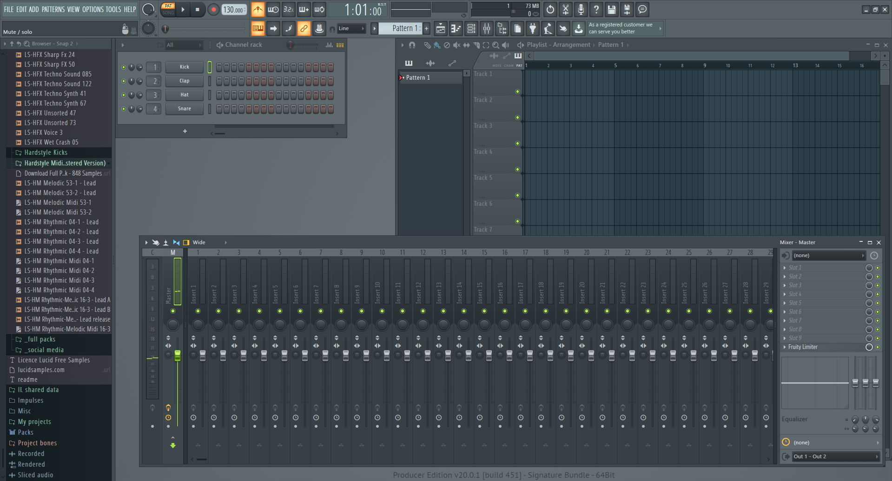
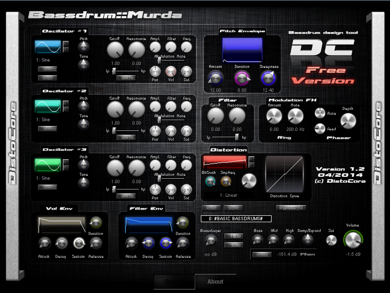
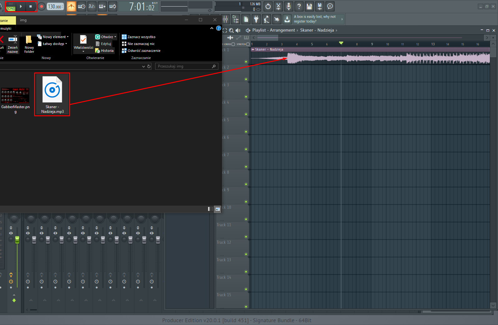
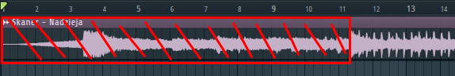
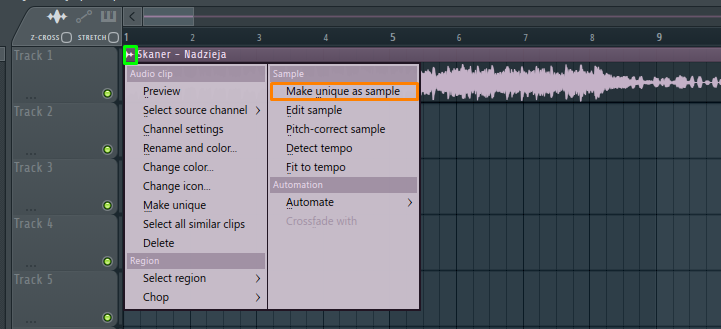
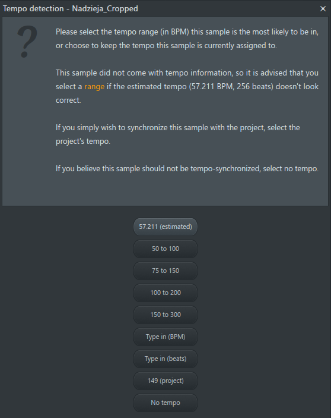
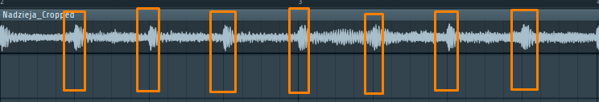
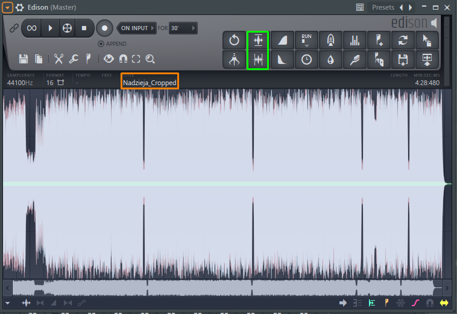
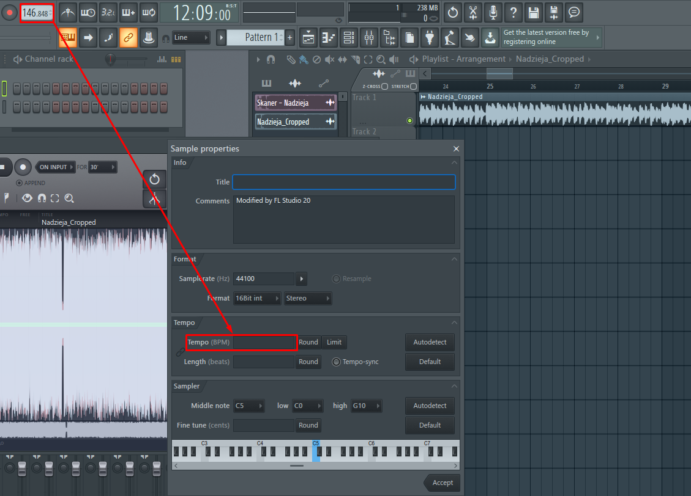

Spis treści
1. Wybór programu
Trzeba zacząć od wyboru programu, w którym chcemu robić nuty. Ja polecam od siebie FL Studio i chuj z tym ze jest platne bo mozna spiracić xD Jest kilka alternatyw typu Tracktion na Linuxa czy Abelton, ale ja z tym drugim nie miałem wiele wspólnego a mając Windowsa na kompie jasne że wybiorę FL Studio bo ma spoko stockowe pluginy i w ogóle jest przejrzysty imo idealny do takich celów, ogólnie poradnik jest pisany typowo pod FL Studio ale jak ktoś ma trochę umiejętności to sobie poradzi również w innych programach z tym poradnikiem
2. Wybór pluginów
Załóżmy, że wybrałeś już FL Studio, a teraz trzeba czymś zrobić dźwięki, ja zaczynalem od stockowych sampli czyli np. brałem kick i dodawałem mu disortion żeby tak charakterystycznie pierdział no i dodawałem EQ żeby był trochę agresywniejszy, ale odpuśccie sobie takie rozwiązania bo po co się pierdolić z tym jak można od razu mieć jakiś fajny plugin do rejwów, a niektóre nie ograniczają się do robienia kicków i drumsów, oto kilka z nich:
-
Gabber Master! VST by John Merrik

Plugin z którego mało korzystam ale jest spoko, można nim robić screechy, kicki, drumsy itp. ma kilka gotowych presetów typowo pod speedcore, hardcore i terrorcore. Warto się zapoznać na początek
-
Bassdrum::Murda VST by Distocore
zajebisty plugin z wielką ilością presetów które można sobie modyfikować do woli, od klasycznych kicków do nakurwiania. polecam się przyglądać ustawieniom poszczególnych presetów i tworzyć własne bo może w końcu się uda zrobic zajebisty kick
3. Przygotowanie muzyki
Importowanie i przycinanie
Pora na przygotowanie muzyki, zacznijmy od przeciągnięcia pliku dźwiękowego (np. *.mp3) do FL Studio. Robimy zwykły drag'n'drop upuszczając na to duże pole w Fl Studio zwane Playlist. W moim przypadku piosenka to Skaner - Nadzieja xD. Od razu obok tego znaczka ► z PAT zmieniamy na SONG (lewa górna część screena poniżej)
Z przytrzymanym klawiszem Alt łapiemy za początek pliku mp3 i przesuwamy do tego miejsca, gdzie zaczyna się piosenka. Usuwamy niepotrzebny wstęp. Aby ten krok wykonać dokładnie można przybliżać widok trzymając Ctrl i kręcąc scrollem
Wykreślony wstęp idzie do wyjebania
Następnie klikamy w tą małą ikonkę (zaznaczoną na zielono) i wybieramy Make unique as sample. Zapisujemy w dowolnym folderze, np. na pulpicie nazwanym Skaner - Nadzieja Remix. Plik możemy nazwać czymś typu Cropped.mp3.
Tempo
Dobra, teraz musimy znaleźć tempo naszej muzyki aby potem ją móc przyśpieszyć do odpowiedniej prędkości zgodnej z tempem projektu. Ale powoli hehe najpierw klikamy prawym przyciskiem myszy na 130.000 obok tego co zmienialiśmy z PAT na SONG. Wybieramy Tap, możemy puścić piosenkę i napierdalamy zgodnie z tempem piosenki w ten kwadrat, który nam się pojawił. Coś jak równomierne klaskanie na koncertach w rytm muzyki. W ten sposób orientujemy się jakie mniej-więcej jest tempo. W moim przypadku to 149.000BPM. Klikamy ponownie na znak gdzie klikaliśmy Make unique as sample z tym, że teraz wybieramy Detect Tempo.
Wybieramy wartość z którą zazębia się wyklikana przez nas wartość, w moim przypadku to 149 BPM więc wybieram opcję 100 to 200 BPM. Klikamy Ok i czekamy, następnie klikamy Yes i mamy nasze tempo. U mnie to 146.848BPM. Aby potwierdzić, że tempo jest odpowiednie sprawdzamy czy te fale się pokrywają z kratką w Playliście.
Jak widać u mnie sie pokrywaja hehe zajebiście mamy tempo.
Dobra teraz musimy przyśpieszyć melodie, ponownie klikamy na nasz znak gdzie wybieraliśmy Detect Tempo, teraz klikając Edit Sample, następnie klikamy w te dwie opcje na obrazku poniżej w zielonym prostokącie, a następnie prawym przyciskiem myszy na nazwę utworu (w pomarańczowym prostokącie).
Wartość którą zdetektowaliśmy (? xd) przenosimy do Tempo
Klikamy accept, a potem robimy to co na gifie

Teraz dobieramy tempo utworu, tam gdzie mamy napisane w moim przypadku 146.848 klikamy na to PPM i wybieramy Type in Value. Ja wpisuję 220.000, polecam wartości od 180 do 240 dla remixów, może być nawet 300, ale w tym wypadku polecam zakładkę na temat tempa.
Po wybraniu tempa klikamy tam gdzie wybieraliśmy opcje Make unique as sample/Detect Tempo/Edit Sample i wybieramy Fit to tempo. W otworzonym oknie wybieramy pierwszą opcje. Możemy puścić piosenkę, już jest przyśpieszona i gra w 220BPM